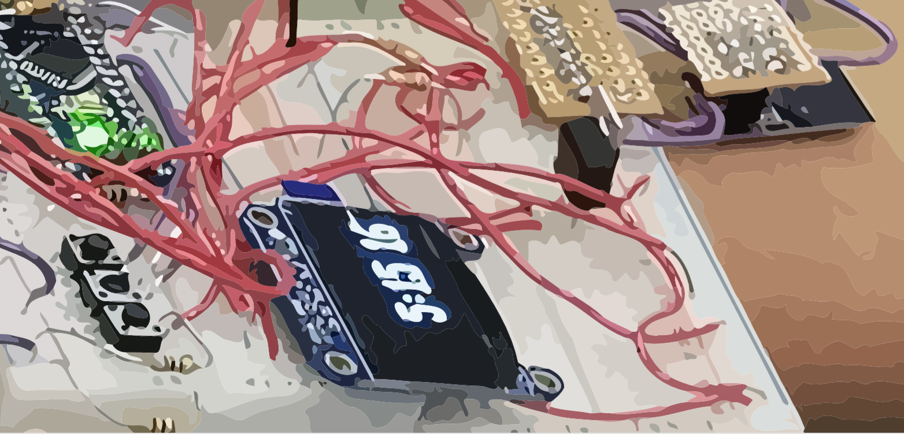

About.Me
(This website is currently under maitenance) I am currently a 3rd year student at UCLA studying Computer
Science and Engineering. I am interested in machine
learning, signal processing, and data mining.
I enjoy making cool software and hardware projects using novel technologies.
In my free time, I enjoy playing jazz guitar and hiking. :)

Languges
Python, C, C++, BASH/Expect, Javascript, Java, HTML/CSS, SQL
Libraries
Keras, Tensorflow, FANN, OpenCV, Bluetoothctl, LiquidDSP
Frameworks
NodeJS, Express, React, Mongodb/mongoose
Tools
Git, Linux/Unix, Vim, Shell-Scripting
Hardware
EAGLE/Altium, Embedded/MCU, Firmware, Control (PID, etc.), DSP filters